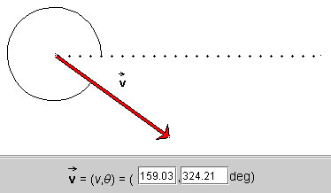
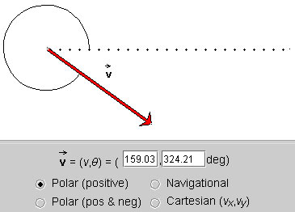
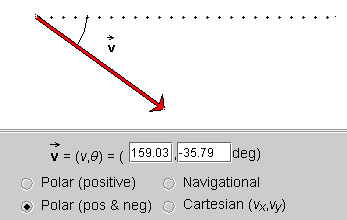
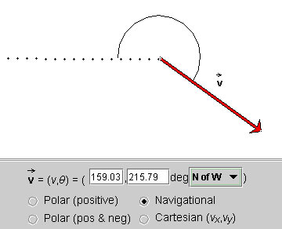
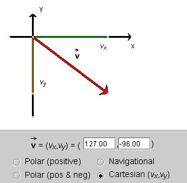
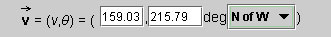

When the applet is loaded, it will already display a vector. You can change the vector either by changing the arrow or by changing the values in the data field at the bottom of the applet.
To change the arrow, click either on its tip or tail and drag. To move the arrow without changing its magnitude or direction, click near the middle of the arrow and drag.
The two data fields in the control panel display the magnitude of the vector and the angle between the vector and the dotted reference line. (This is assuming you are still in the default display mode. See Point 3 below for the other modes.)

Instead of changing the vector by dragging the arrow, you can change it by typing a different pair of values in the two data entry fields, followed by pressing ENTER on the keyboard.

The dotted line is a reference line relative to which the angle specifying the vector is measured. The angle is indicated by an arc.
The applet works with vectors in two dimensions. Two numbers are needed to specify a vector in two dimensions. The applet lets you choose from four different kinds of pairs of numbers to specify a vector.
- Polar (positive).

The vector is specified by its polar coordinates: magnitude and direction angle. The direction angle is taken between the vector and the 'East' direction, indicated by a dotted line. All angles are positive between 0 and 3600, increasing in the positive (counter-clockwise) sense starting at the reference line.
The magnitude of the vector is in pixels, in all four methods.
- Polar (pos & neg).

Same as Polar (positive), but the angles are taken to be in the range from -1800 to 1800. The angle is negative if the vector points to a point below the horizontal axis, as in the example above. It is positive if the vector points to a point above the horizontal axis.
- Navigational.

Same as for Polar (positive), but the angles are taken relative to one of the four compass directions, either in the clockwise or counter-clockwise sense. In the present example, the angle is specified by "N of W", which means the angle is measured between West (dotted line) and the vector, the angle being defined as going in the direction from West to North, i.e., clockwise.
There are eight such modes of specifying an angle, from east of north (E of N), north of east (N of E), all the way to west of north (W of N).
The mode can be selected from a drop-down menu that becomes available when the Navigational method is chosen. All angles range from 0 to 3600.
- Cartesian (vx,vy).

The vector
 is specified by its
x and y (scalar) components
(vx,vy) relative to a pair of
horizontal (x) and vertical (y) axes. The
x-component is shown in green, and the y-component in
yellow.
is specified by its
x and y (scalar) components
(vx,vy) relative to a pair of
horizontal (x) and vertical (y) axes. The
x-component is shown in green, and the y-component in
yellow.

The two data fields show the number pair that specifies the vector. A given vector is specified by a different number pair in each of the four modes described in Point 3 above. The way the two numbers in each pair are to be interpreted is indicated by the preceding symbolic description. E.g., in the present example, the symbolic expression (v,q) precedes the two data fields. Thus, in this case, the first entry is equal to v and the second entry equal to q.
You can change the vector by typing new values into the data fields, followed by pressing ENTER on the keyboard, or by dragging the tip or tail of the vector. In the latter case, the data entry fields are updated automatically as you change the vector.